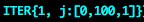
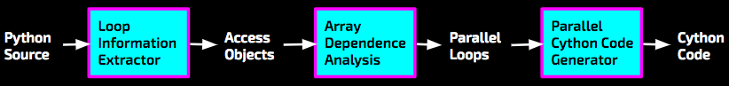

Python Automatic Loop Parallelization
Joey Fernau

Summary
Implemented array dependence analysis for Python by utilzing the functionality provided by Cython, a typed superset of Python that compiles to C, in order to perform automatic loop parallelization. The parallel system used is OpenMP -- run on a CPU with 4 logical cores.
Background
Key Data Structures
An Array Access

Represents an access into an array. In the above example, A is the array, being indexed by the expression i+99 . It is an array READ at line 21 of the program. The loop Iterators it depends on are ITER{0, i:[0,100,1]} and ITER{1, j:[0,100,1]}.
An Iterator
Represents the loop variable of the loop. In the above, j is a loop variable that ranges from [0,100) in the loop at depth 1.
Key Operations
Setting fields to obtain more information about the program, so as to perform array dependence analysis.
Inputs and Outputs
Dependencies
Data Dependent Accesses
parallelizable loop- one with no data dependent array Accesses across iterations
two Accesses are data dependent if at least one is a write and there exists an array Access of one that matches the other’s when considering all iterations
Data Dependent
Data Independent
Approach
Technologies
Python, python ast module, Cython, any machine target
Existing Code
The unparser.py was a file to go from an abstract syntax tree back to Python source code. Now, in its modified state, it goes to a form needed when loops are translated to parallel OpenMP Cython.
System Overview
Given Python Source, the Loop Information Extractor uses the Python ast module (Abstract Syntax Tree). Access objects (described above) are created by analyzing the nested loop structure of all loops. These access objects are then passed into the Array Dependence Analysis, which uses integer linear programming to determine if there exists two accesses (where at least one is a write) that conflict. The loops that can be run in parallel are then the output and given to Parallel Cython Code Generator, which outputs Cython code, annotated with OpenMP.
Results
=>
=>
References
Purple Dragon Book: Alfred V. Aho, Monica S. Lam, Ravi Sethi, and Jeffrey D. Ullman. Compilers: Principles, Techniques, and Tools (2nd Edition). Pearson Addison Wesley, 2006. ISBN: 978-0321486814.
Copyright © 2016, 2017 by Joey Fernau